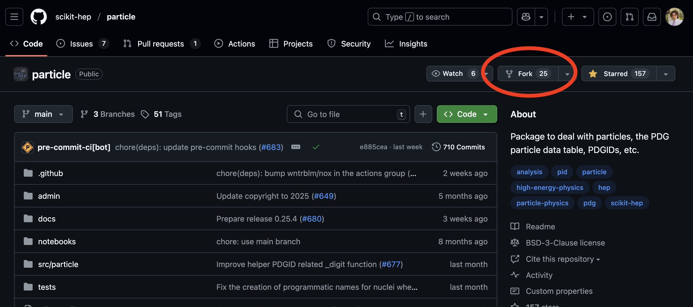
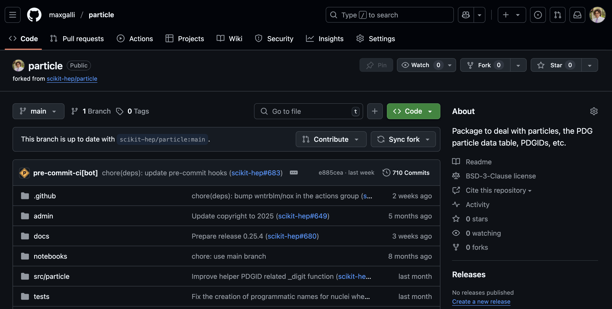

Using Git and Github#
Overview of Git and GitHub#
Git is a distributed version control system that was originally created by Linus Torvalds, the original creator of the Linux operating system.
A version control system is a tool that allows use to organize and track the evolution of data files over time. It is in particular widely used and useful for text files, such as the source code for software (in various languages such as Python, C++, …) and documents in formats like LaTeX and markdown. Usually the code or document files that naturally go together are grouped into entities called “repositories”.
A version control system is “distributed” if it enables people working in different places (and on different systems/computers) to work on independent copies of the data/files and then exchange information about the changes they have made.
GitHub is essentially a cloud hosting service for git repositories, with some additional functionality that becomes important when there are multiple or many people developing a piece of softwarew and/or many users of that software. This includes functionalities for tracking bugs, feature requests and continous integration of code changes and testing.
For the purposes of the exercises in this course, we have a fairly simple situation: you have created a Git repository on GitHub and in order to make changes you are making a clone of that repository either on a (transient!) BinderHub instance or on your laptop. Because the BinderHub instance is transient (it will go away), you periodically want to push any changes or new code you make to the GitHub (cloud) repository. Even if you are working on your laptop, pushing to the GitHub repository is useful to back up your code and to make it visible to others.
Git and GitHub In Practice#
Each time you start a new, fresh BinderHub instance (or the very first time you begin working with Git on your laptop), you will need to:
Clone a copy of your GitHub repo on your BinderHub instance or your laptop, you will need to do:
git clone https://XXXXX@github.com/pelmer/999-hsf-india-202509-pelmer
Here you should substitute “XXXXX” with the github token that we created separately, and change the github username and repository name to the one appropriate for you.
You should then change the working directory in JupyterLab (e.g. in the filemanager on the left side) to the directory corresponding to the Git repo you have just cloned. If you are working in a shell on a terminal, you should change your working directory via a command like
cd 999-hsf-india-202509-pelmer(or equivalent for your repository name).Execute a couple of commands to tell git some configuration information:
git config --global user.email "YOUR-EMAIL@WHEREVER"
git config --global user.name "YOUR NAME"
Update the parts in capital letters to your own email and name.
Now each time you would like to push any changes you have made locally in the BinderHub instance (or your laptop) to the (cloud) GitHub repository, you should:
git add FILENAME
git commit -m "SOME SHORT MESSAGE ABOUT WHAT CHANGED"
git push
Again change the parts in all capital letters to match what you are doing.
If you have changed more than one file, you can also git add more than
one file and then just do a single commit and push:
git add FILENAME1
git add FILENAME2
git add FILENAME3
git commit -m "CHANGED SEVERAL THINGS"
git push
And lastly if you want to just add all files that have been changed in your local copy of the Git repo, you can do:
git add .
git commit -m "CHANGED SEVERAL THINGS"
git push
Checking the status of your local repository#
It is often useful to see which files you have modified in your “local”
repository (i.e. in the BinderHub instance or on your laptop), which files
you have already add-ed for commit, etc. You can do this using the
git status command. For example, in the repo where I am writing these
instructions, the status after changing this file is:
mbp> git status
On branch main
Your branch is up to date with 'origin/main'.
Changes not staged for commit:
(use "git add <file>..." to update what will be committed)
(use "git restore <file>..." to discard changes in working directory)
modified: 991-github-use.md
Untracked files:
(use "git add <file>..." to include in what will be committed)
some-other-file.md
no changes added to commit (use "git add" and/or "git commit -a")
(jupyter-book) mbp>
In this case 991-github-use.md is a file already known to the repository,
but I have made new local changes that are not yet committed. There is
also a new and unknown to the repository file called “some-other-file.md”.
In both cases, one can use the git add command to stage them for
committing (followed by the git commit and git push commands as
above).
Temporary and Cache Files#
While you are working with Python and Jupyter some files may be created that are temporary and do not need to be added to the repository in GitHub. For example:
.ipynb_checkpoints- this directory is used by Jupyter to store checkpoints of your work in Jupyter while you are working and before you have explicitly saved the notebook.__pycache__- this directory may be created by the Python interpreter when you run python scripts. It stores Python “bytecode” from imported modules, which allows them to run faster.
In general these are temporary directories which will be recreated by Jupyter and Python as needed. You can ignore them, but you should avoid git add-ing them and pushing them to your GitHub repository. (It is easy to accidentally do this if you use the git add . command. To avoid that, you can create (and add/commit/push to your repository!) a file called “.gitignore” with the following contents:
.ipynb_checkpoints
__pycache__
Fork#
Most of the times, you might have to work together with other people on a wider project. In these cases, it is useful to create your own copy of the repo on the cloud, which can track changes in the central one. This procedure is called forking.
To create a fork of a repo, press the “fork” button on the top of the webpage.

Now, your own copy of the initial repo is available in your list of repositories.

You can now clone with the usual procedure.
If you want to locally track the changes that happen in the central repository, you can add it as a remote to your local copy:
git remote add upstream <link_to_central_repo>
You can show the list of remotes with
git remote -v
In this case, it will show
origin git@github.com:maxgalli/particle.git (fetch)
origin git@github.com:maxgalli/particle.git (push)
upstream git@github.com:scikit-hep/particle.git (fetch)
upstream git@github.com:scikit-hep/particle.git (push)
where origin is your fork, while upstream points to the central repo.
Further Information#
For more information and a bit of a deeper dive into things you can do with git, see websites like: